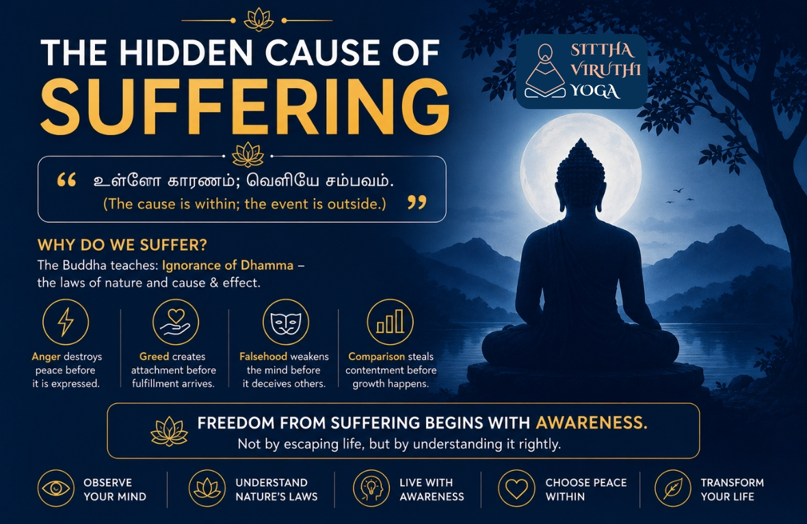

The Hidden Cause of Suffering

Human beings suffer. Many suffer without even realizing how deeply trapped they are in suffering.
After struggling with pain for so long, suffering slowly becomes normal. People become so accustomed to inner restlessness that they no longer realize that a peaceful state without suffering is even possible.
When one problem ends, the mind should naturally become quiet. But the human mind rarely functions that way. Even after one suffering disappears on its own, the mind quickly searches for another. Sometimes, it even creates problems where none truly exist.
- It suffers remembering yesterday’s conversations.
- It worries about what may happen tomorrow.
- It compares itself with others and feels inadequate.
- It fears events that have not even happened.
Thus, more than what happens outside, human beings suffer because of what happens within.
What is the reason for this suffering?
The Buddha says: “Ignorance is the root of suffering.” Here, ignorance does not mean lack of education. Nor does it mean lack of worldly intelligence. Even highly educated people may suffer deeply. Even wealthy people may live without peace of mind. Even intelligent individuals may struggle in relationships. Then what is the ignorance the Buddha speaks about? Ignorance of Dhamma. In other words, ignorance of the laws of nature. Ignorance of cause and effect. It is the inability to see that the consequence is already embedded within the action itself.
- Anger begins destroying peace even before it is expressed.
- Greed creates attachment even before fulfillment arrives.
- Falsehood weakens the mind even before it deceives others.
- Comparison steals contentment even before growth happens.
That is why it is said that the result is intrinsic to the action itself. When a person begins to clearly observe these natural laws, their understanding of life slowly changes. They begin to realize that suffering is not always caused by external situations. More often, suffering is created by the way the mind relates to those situations. “உள்ேள காரணம்; ெவளிேய சம்பவம்.” (The cause is within; the event is outside.)
That is where transformation begins. But this right understanding and right perception do not arise automatically. They do not develop merely by reading books. They do not become stable simply by listening to others. They must be cultivated through observation. Through the ability to see things as they truly are. Through honestly observing oneself. When a person begins to observe their thoughts, emotions, habits, and reactions carefully, awareness slowly begins to awaken within. That awareness is the first doorway out of suffering. To be free from suffering, one need not run away from life. One only needs to understand life rightly. Knowledge may fill the mind; only a life lived with awareness can transform the human being.